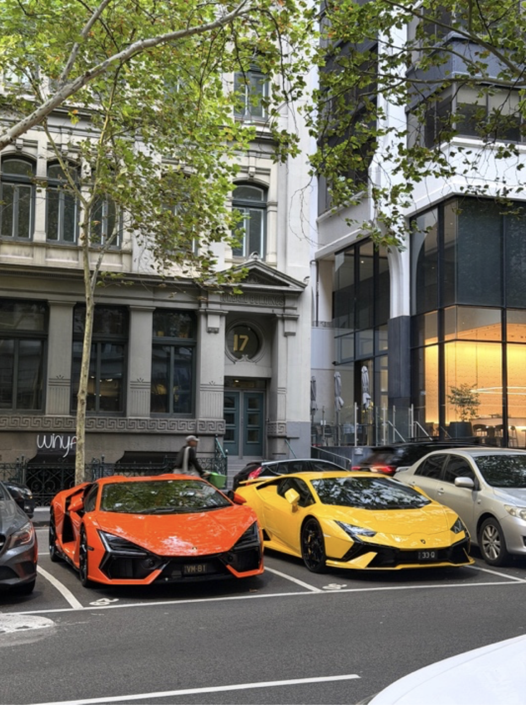

Public / Exterior
Outside
Outside explores the world beyond personal space through exterior scenes, found typography, openness, architecture and movement.
The exterior images focus on public space, colour, movement and visual contrast.
Explore Gallery